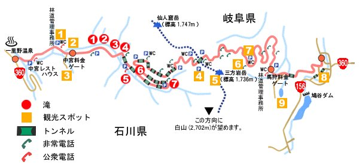
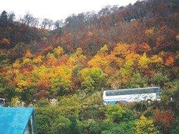
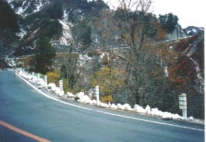
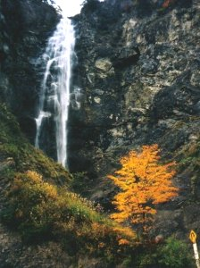

白山スーパー林道 | ２００３年１０月２６日 |
|---|---|
|  「白山スーパー林道」ＭＡＰ 公式ページから勝手に拝借。スンマセン | |
| 白山スーパー林道は、霊峰「白山」の北側を石川県尾口村から吉野谷村を経て、岐阜県白川郷へと通じる全長33.3㎞、幅員6.5ｍの完全舗装された有料道路です。 | |
|  写真①（地図の観光スポット６） |  写真②（観光スポット４トンネル手前） |
| 全長33kmですので普通に自動車を走らせば１時間で走破してしまいます（笑）。 初来訪（多分２回は懐が厳しいでしょう）ですが、道のくねくねがよいです！ Ｐ（駐車場）の多いことが上絵でわかりますが、路肩で広い場所も多々あります。 白川郷展望台は合掌作りの家々からかなり遠い。今回は時間が足りなく訪れなかったが次回こそは見たいな。 また、展望台のＰとなる蓮如茶屋で提灯を購入しました。（趣味です！） 目的は紅葉と走破。燃えるような紅葉を見て、走破完したので◎。 写真①（地図の観光スポット６） 白川郷展望台からの風景は是非訪れて見てください。絶景です。ただし手前に長い階段があります。諦めないで。 写真②（観光スポット４トンネル手前） 雪が降ったので通過できないと当初思っていました。これぐらいなら通常タイヤでOK。 | |
 写真③（観光スポット４過ぎてしばらく） |  写真④（滝⑦） |
| 補足：名古屋からの交通は荘川ICで下ります。ICを出たすぐの道の駅に桜香の湯があります。 露天風呂でICの料金所が見えます（ICは遠く高い丘の上ですので入浴中の状況はわからないと思いますBY男風呂）。 156号線のトンネルは非常に狭いです。気をつけましょう。 写真③（観光スポット４過ぎてしばらく） ここに車を止めて本撮影をしたのだが、私の車周囲に同様な目的の撮影組に囲まれてしまった。Ｐでない場所なので文句は言えず、ちょっと困りました。 写真④（滝⑦） 紅葉と滝の相性はいいですね。ここは記念撮影POINT。ヘアピンの内側にＰがあります。 | |